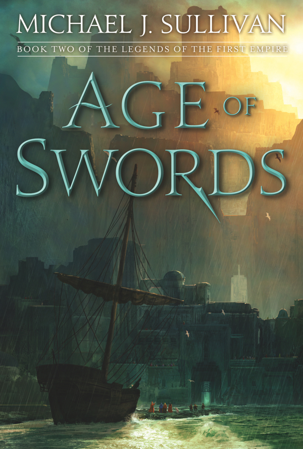

Age of Swords
⭐️⭐️⭐️⭐️
Format: 🎧 (20 hours 3 minutes)
A great installment for this series. Building smoothly on the first book in the series, Michael J. Sullivan, the author, has helped thing pick up steam. New people, new lands, new plots, yet Sullivan has woven things together nicely. I enjoy the magic system as well - with a bit of feel to it, but not a full wave of the wand, as if it all comes out of nowhere. One thing I don't enjoy is how the people are described in their series of "discoveries" as they seem to come out of a stone age (copper age), and into the iron age. I'll be intersted to see how (or if) the author can explain how a handful of amazingly forward thinking, creative, transformational people are coming from such a small pool of candidates. All of this said, I'm happily diving right into the third book in the series immediately.
- Prior: Age of Myth
- Next: Age of War